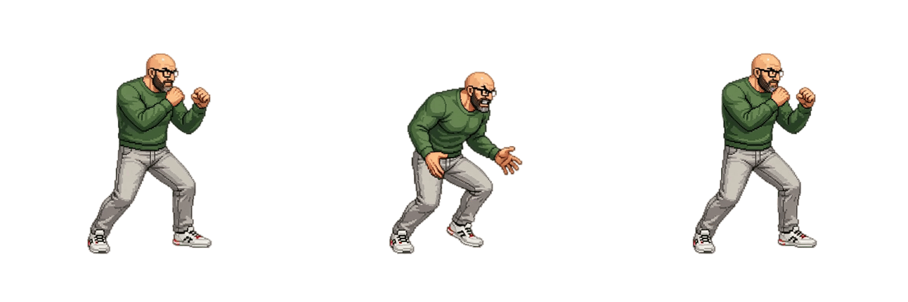
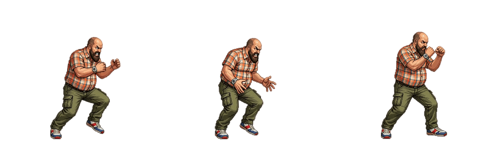
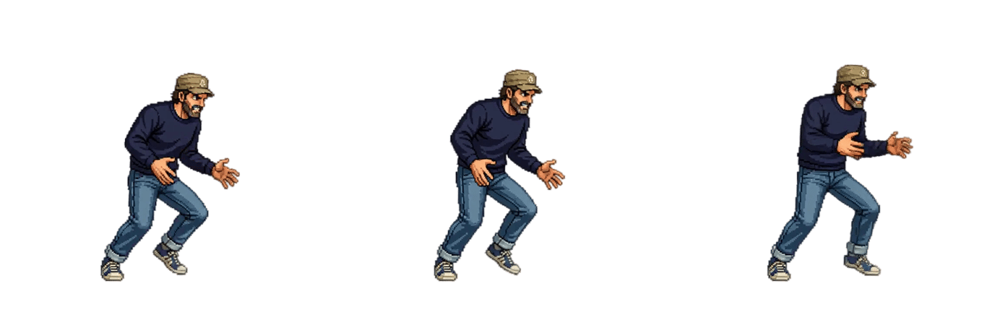
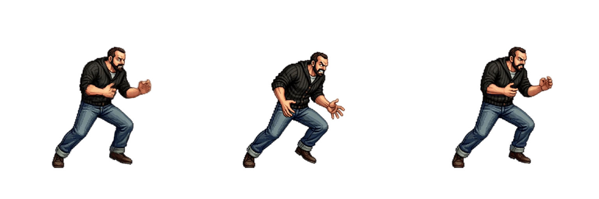
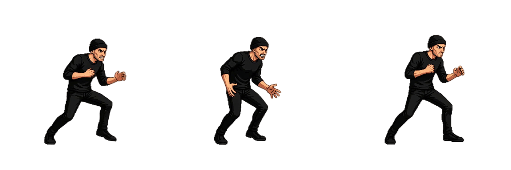
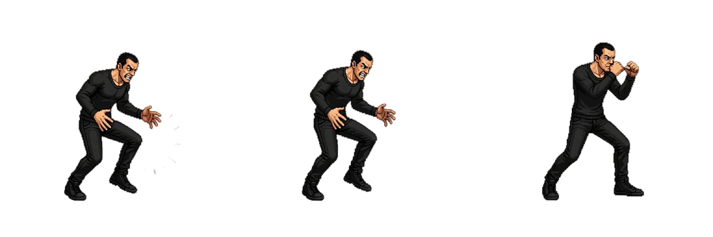
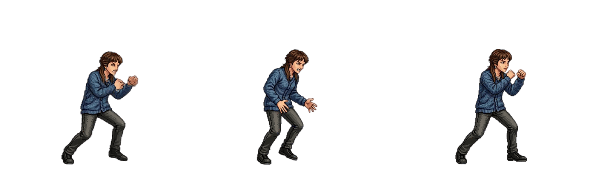
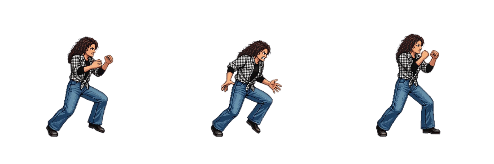
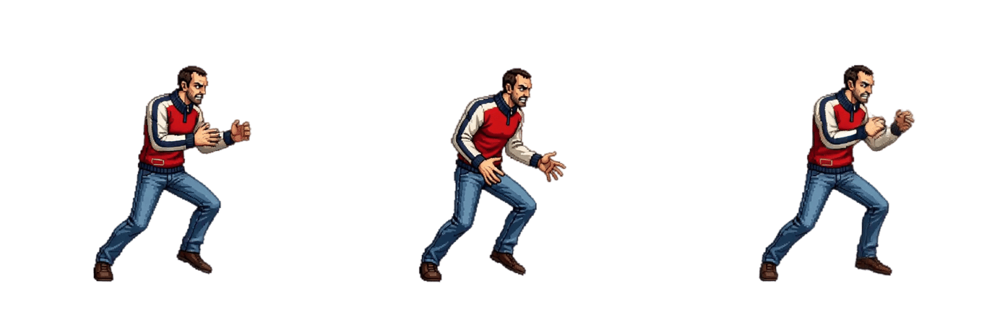

Apri Hurt basso nella demoTiming Hurt basso
Aggiornato il 2026-11-21. Nove personaggi; ogni animazione dura 500 ms (0,5 s) a velocita 1x. FPS e durata del singolo frame compensano il numero di celle di ciascun taglio.
Riproduzione solo avanti della reazione e del recupero presenti nello spritesheet. Le immagini mostrano inizio, meta e fine del taglio, senza indicare un impatto sincronizzato. Loop e CRT attivi nella demo. La posa di riferimento e la guardia in piedi.
Preferite le versioni trimmed salvate su AutoSprite. Indici sorgente da zero nello spritesheet selezionato; nessun offset dedotto dal parent. Pixel RGBA, dimensioni 512x512 e padding conservati senza ridimensionamenti. In Godot usare gli atlas e le durate per frame.
Scarica CSV
| Personaggio | Inizio / meta / fine | Intervallo / sorgente | Frame | FPS | Durata frame | Durata ciclo | Provenienza |
|---|
| ALBERTO |  | 0–19 / 20 | 20 | 40 | 25.000 ms | 500 ms | Hurt Low
cmwq5pz7h004hg68gyxo8dsc9
Atlas |
|---|
| FABIO-CLARA |  | 0–19 / 20 | 20 | 40 | 25.000 ms | 500 ms | Hurt Low
cmwq5xplm0001gbgp4ndu4b2l
Atlas |
|---|
| SBOZ |  | 0–16 / 17 | 17 | 34 | 29.412 ms | 500 ms | Hurt Low
cmwq6aa7b001x13sfqf23tveq
Atlas |
|---|
| PIPPO |  | 0–16 / 17 | 17 | 34 | 29.412 ms | 500 ms | Hurt Low
cmwq685nm00dxayq43lf9xm58
Atlas |
|---|
| PEPPO |  | 0–16 / 17 | 17 | 34 | 29.412 ms | 500 ms | Hurt Low
cmwq669zn001013sf99f8twsl
Atlas |
|---|
| Oscar |  | 0–17 / 18 | 18 | 36 | 27.778 ms | 500 ms | Hurt Low
cmwq59wf5008cgtuwiot07cku
Atlas |
|---|
| Elisa |  | 0–18 / 19 | 19 | 38 | 26.316 ms | 500 ms | Hurt Low
cmwq5tszw009kbxblbz6nkjl4
Atlas |
|---|
| FRA-TAVARONE |  | 0–17 / 18 | 18 | 36 | 27.778 ms | 500 ms | Hurt Low
cmwq5zi60008ohsldd4lzssny
Atlas |
|---|
| MARSAN |  | 0–16 / 17 | 17 | 34 | 29.412 ms | 500 ms | Hurt Low
cmwq63sbg00cpayq43g5lpl89
Atlas |
|---|